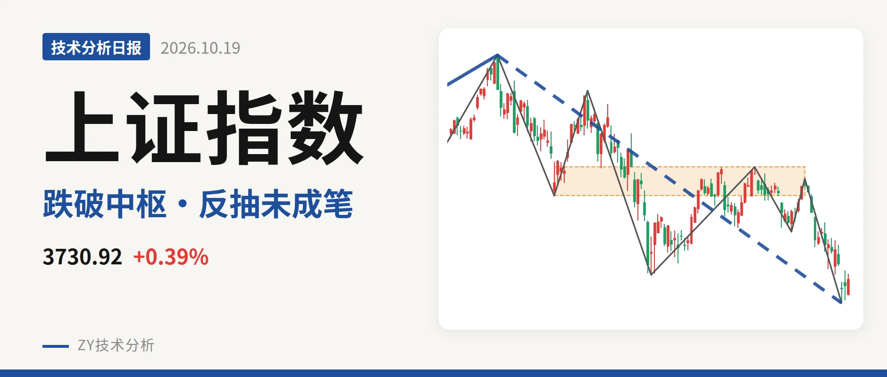
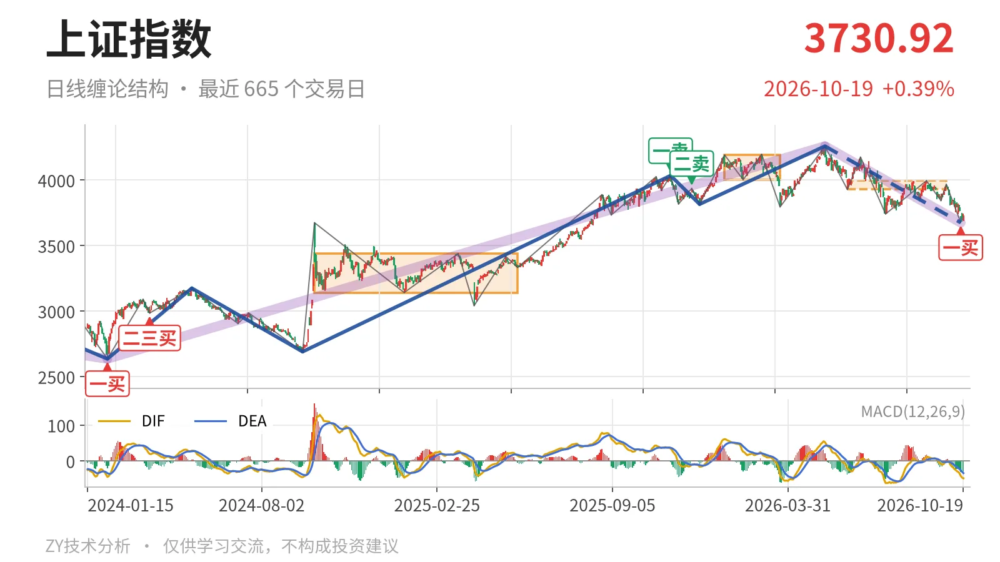
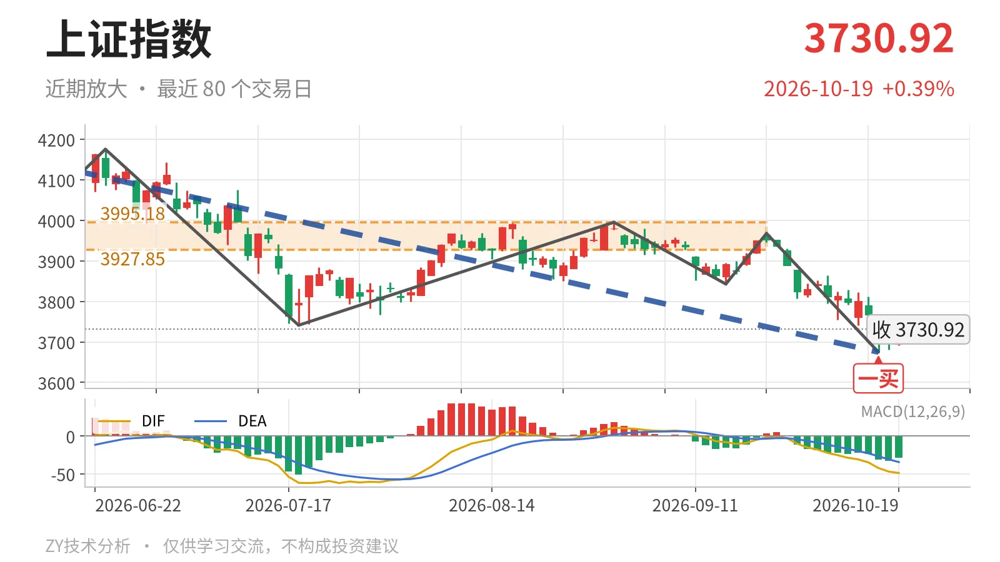

上证指数｜3675点一买后未成笔，反抽看3928点

最近日线中枢 3927.85—3995.18点，收盘位于中枢之下
一句话：一买后反抽未成笔，价格仍低于最近中枢下沿
📉 走势结构：大级别上涨未结束，短线下跌段仍在延续
更大级别上，2024年2月5日至2026年5月14日的上涨段尚未结束，但5月14日至10月15日的下跌段也还在延续。日线线段上，5月14日至10月15日的下跌线段还在延续，内含7笔，当前仍处于这段下跌结构里。此前2024年2月5日至2026年5月14日的上涨段从2635.09点走到4258.86点，上涨约61.6%。当前调整暂时只能看作大级别上涨中的回落，而不是直接反转。

📍 中枢与位置：价格跌破最近中枢，中枢出现下移
价格已经跌破最近中枢，且该中枢出现下移。最近一个日线笔中枢在6月8日至9月22日之间形成，区间3927.85—3995.18点，尚处于未完成状态。最新收盘3730.92点低于该中枢下沿约5.0%。此前1月14日至3月23日的日线笔中枢位于4002.78—4190.87点，最近中枢明显下移。价格跌破中枢下沿后，若不能重新回到3928点上方，这个未完成中枢反而可能成为反弹的结构压制。
🧭 买卖点：10月15日一买已出，反弹尚未成笔
日线笔级别上，10月15日出现一买，低点3674.82点，所在笔为9月22日至10月15日的下跌笔，该笔已经结束。10月16日以来只有2根K线，最高3750.77点，最低3681.28点，还没有形成一笔。截至10月19日，最低3681.28点未跌破3674.82点，因此这个一买还未被破坏。若后续回落跌破3675点，这一买只对应更小级别，结构上要重新看待。

⚖️ 背驰：新低不新弱，构成日线笔级别背驰
比较6月23日至7月20日与9月22日至10月15日两段同向下跌笔，出现新低不新弱。后者价格创出3674.82点新低，低于前低3741.11点；但绿柱面积192小于289，DIF低点-42.2高于-61.8。价格新低而力度不新弱，构成日线笔级别背驰，这正是10月15日一买的结构来源。当前DIF为-48.8，仍在零轴下方，柱体为-29.0，说明大级别空头结构没有被扭转。
🔎 关键位置观察：反抽看3928点附近，跌破3675点则弱延续
上方最近观察位是3928点附近，结构含义在于反抽能否回到日线笔中枢下沿。反抽若回不到3928点上方，结构上构成三卖；重新站上3928点，下跌更可能只是中枢扩展。下方3675点附近对应10月15日一买低点3674.82点，若回落跌破该位置，日线一买被破坏，要等新的底部结构。当前价格仍在3681—3751点之间，结构偏弱：弱在价格位于最近中枢下方、MACD在零轴下、反弹尚未成笔。
⚠️ 本文为基于公开行情数据的缠论技术结构记录，由程序自动计算并生成，仅供学习交流，不构成任何投资建议。市场有风险，投资需谨慎。